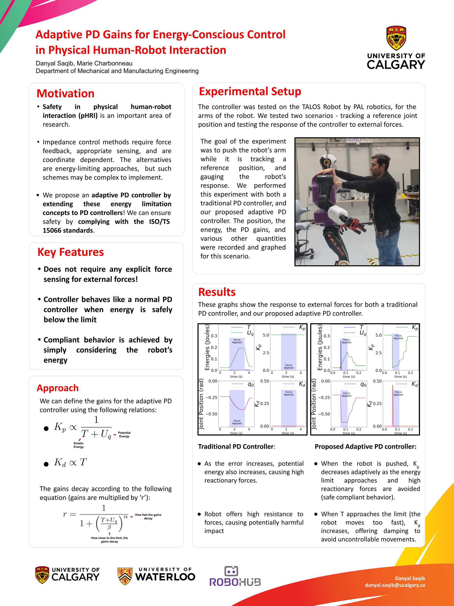
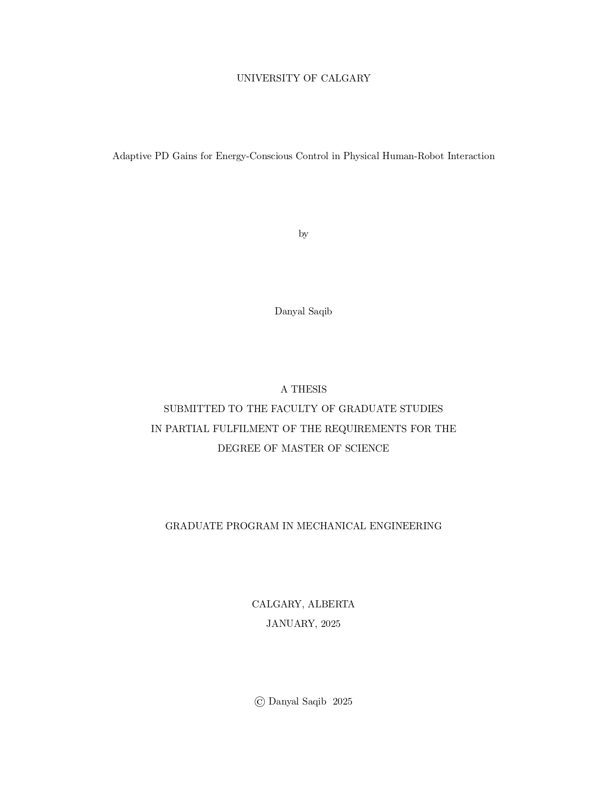
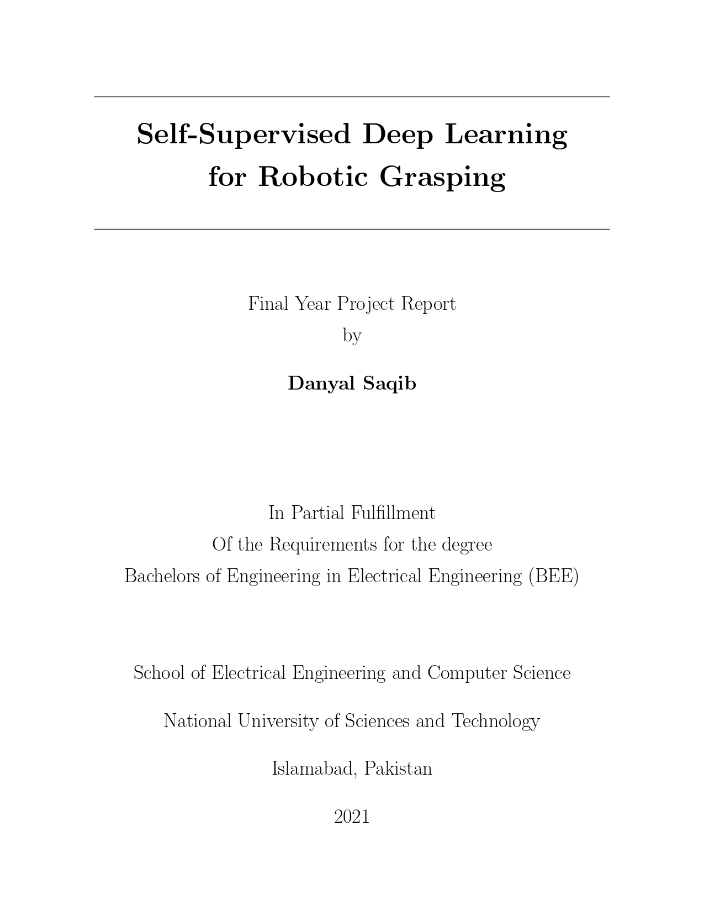

|
Danyal Saqib I am a PhD student at the University of British Columbia (UBC) in Vancouver, Canada, researching data-driven control, modeling, and analysis of complex systems with applications to robotics and embodied physical intelligence. I am a part of the Padoan Lab within the Department of Electrical and Computer Engineering, supervised by Dr. Alberto Padoan. I previously completed my MSc at the University of Calgary, with research focusing on Robotics and Controls as part of the Calgary Human-Robot Collaboration (CHRC) Lab, supervised by Dr. Marie Charbonneau. I received my Bachelor's degree in Electrical Engineering from SEECS, NUST. My undergraduate thesis was supervised by Dr. Wajahat Hussain, in the domain of self-supervised learning for robotic systems. Email / CV / Google Scholar / Github / LinkedIn |
{kind=link}
ResearchMy general research interests include control theory, learning, and robotics. I am currently researching the modeling, analysis, and control of interconnected robotic systems, and how physical reservoir systems lend themselves to complex tasks. I am privileged to have had the opportunity to work with and design controllers for several interesting robots, such as the Reachy Robot by Pollen Robotics at the University of Calgary's CHRC Lab, and the Talos Humanoid Robot by PAL Robotics at the University of Waterloo's RoboHub. |
News |
|
Sep. '25 |
I have begun my PhD in Systems and Controls at the University of British Columbia (UBC)! |
|
Jan. '25 |
I have successfully defended my Master's Thesis at the University of Calgary! |
|
Sep. '24 |
Our abstract submitted for the Alberta RISE Conference 2024 has been accepted for a Poster Presentation! |
|
Jun. '23 |
Excited to have taken part in the Montreal Robotics Summer School 2023 program this summer! |
Publications
Poster Presentations
|

|
Adaptive PD Gains for Energy-Conscious Control
Danyal Saqib, Marie Charbonneau Alberta RISE Conference, 2024 Presented a poster on my research on energy-conscious control for pHRI at the Alberta RISE Conference 2024 at the University of Alberta, Edmonton, Canada. |
Theses
|

|
Adaptive PD Gains for Energy-Conscious Control in
Physical Human-Robot Interaction
Danyal Saqib University of Calgary, 2025 My Master's Thesis, submitted to the Department of Mechanical and Manufacturing Engineering at the University of Calgary. Presents a novel energy-conscious controller for safe pHRI. |
|

|
Self Supervised Deep Learning for Robot Grasping
Danyal Saqib SEECS, NUST, 2021 My undergraduate thesis, submitted to the Department of Electrical Engineering at SEECS, NUST. We present a robotic setup that can learn to grasp geometrically diverse objects using self-supervision. |
Teaching
|
|
University of British Columbia: Teaching Assistant
|
University of Calgary: Teaching Assistant
|
|
SEECS, NUST: Teaching Assistant
|
|
Template courtesy: Jon Barron |